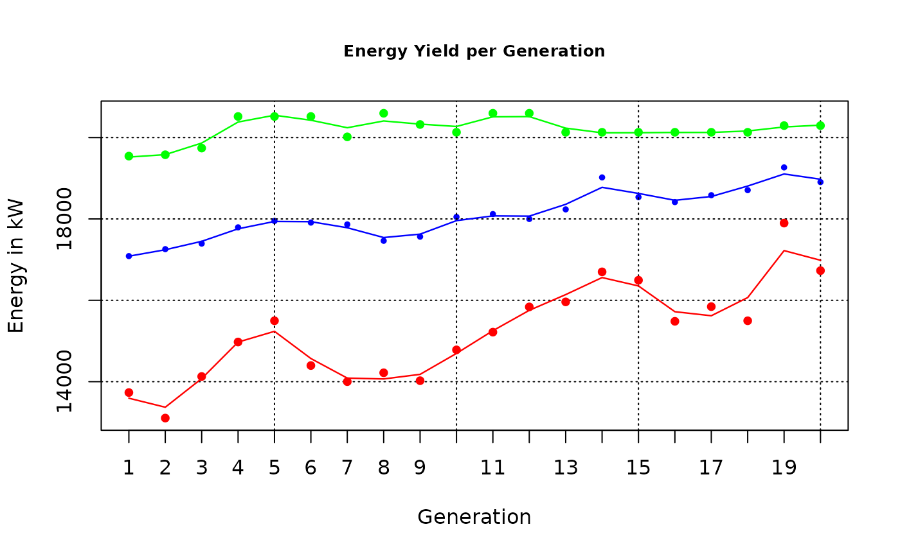
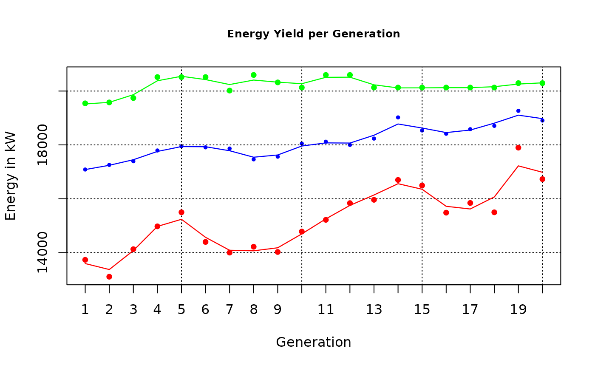
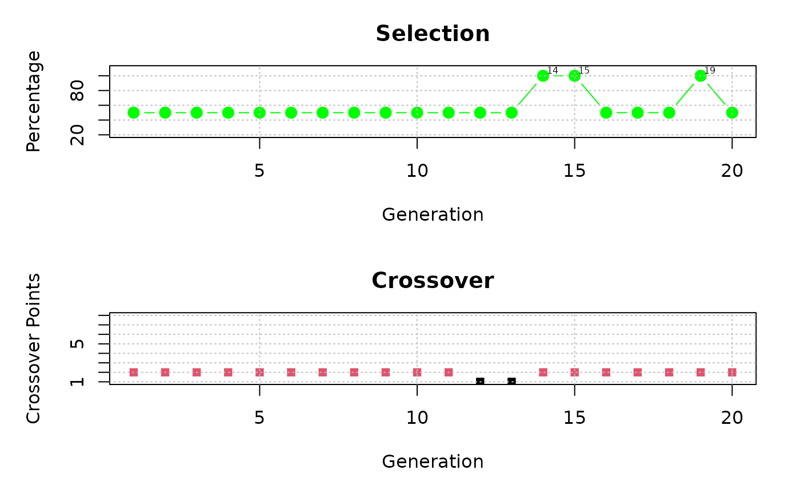
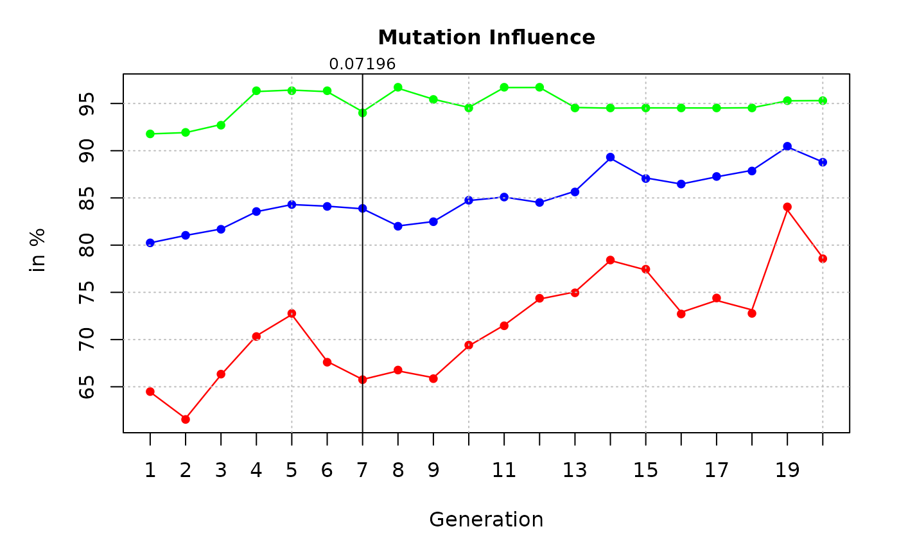
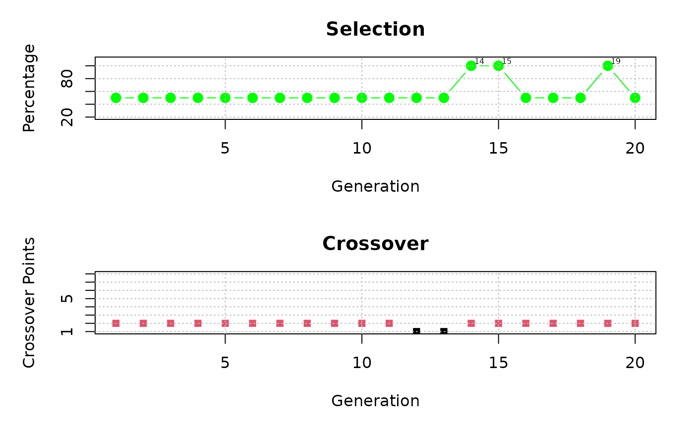
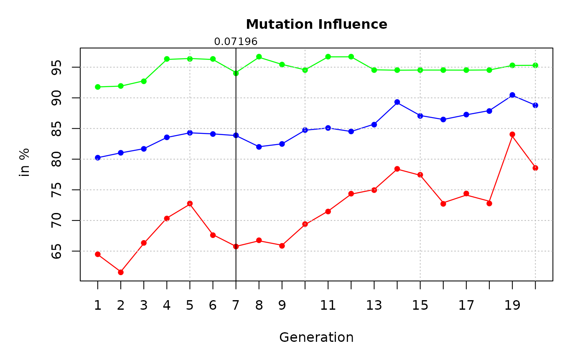
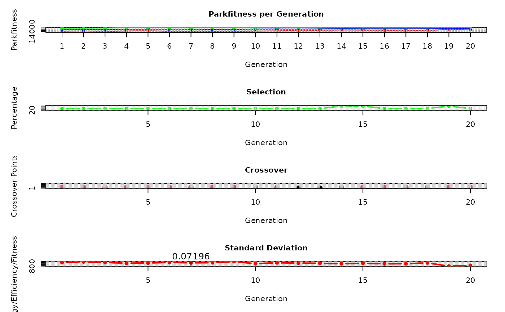
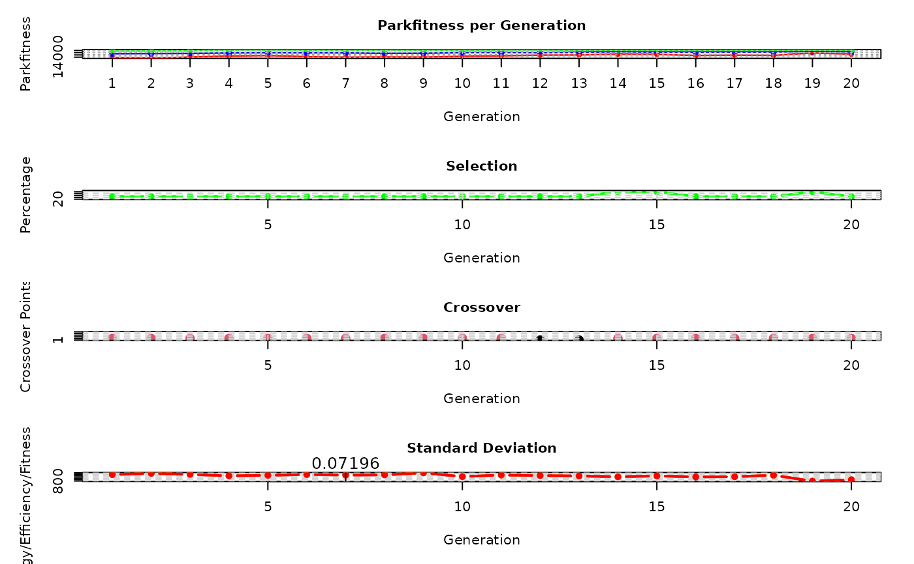
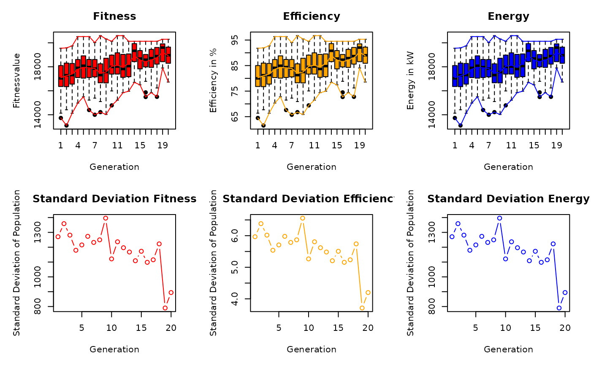
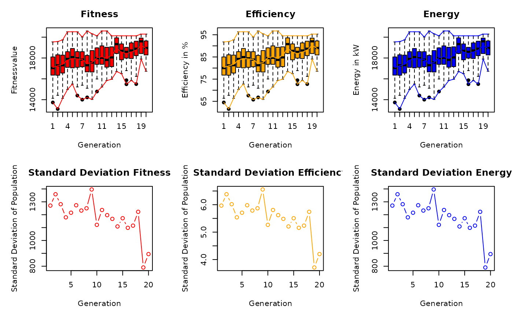

Run a Genetic Algorithm to optimize a wind farm layout
Source:R/genetic_algorithm.R
genetic_algorithm.RdRun a Genetic Algorithm to optimize the layout of wind turbines on a given area. The algorithm works with a fixed amount of turbines, a fixed rotor radius and a mean wind speed value for every incoming wind direction.
Usage
genetic_algorithm(
Polygon1,
GridMethod,
Rotor,
n,
fcrR,
referenceHeight,
RotorHeight,
SurfaceRoughness,
Proportionality,
iteration,
mutr,
vdirspe,
topograp,
elitism,
nelit,
selstate,
crossPart1,
trimForce,
Projection,
sourceCCL,
sourceCCLRoughness,
weibull,
weibullsrc,
Parallel,
numCluster,
verbose = FALSE,
plotit = FALSE
)Arguments
- Polygon1
The considered area as SpatialPolygon, SimpleFeature Polygon or coordinates as matrix/data.frame
- GridMethod
Should the polygon be divided into rectangular or hexagonal grid cells? The default is "Rectangular" grid. Hexagonal grids are computed when assigning "h" or "hexagon" to this input variable.
- Rotor
The rotor radius in meter
- n
The amount of turbines
- fcrR
A numeric value used for grid spacing. Default is
5- referenceHeight
The height at which the incoming wind speeds were measured. Default is
RotorHeight- RotorHeight
The height of the turbine hub
- SurfaceRoughness
A surface roughness length in meters. With the terrain effect model, a surface roughness is calculated for every grid cell using the elevation and land cover data. Default is
0.3- Proportionality
A numeric value used for the grid calculation, as it determines the percentage a grid cell must overlay the area. Default is
1- iteration
The number of iterations. Default is
20- mutr
A numeric mutation rate. Default is
0.008- vdirspe
A data.frame containing the wind speeds, directions and probabilities. See
windata_format.- topograp
Boolean value, which indicates if the terrain effect model should be enabled or not. Default is
FALSE- elitism
Boolean value, which indicates whether elitism should be activated or not. Default is
TRUE- nelit
If
elitismis TRUE, this input determines the amount of individuals in the elite group. Default is 7- selstate
Determines which selection method is used, "FIX" selects a constant percentage and "VAR" selects a variable percentage, depending on the development of the fitness values. Default is "FIX"
- crossPart1
Determines which crossover method is used, "EQU" divides the genetic code at equal intervals and "RAN" divides the genetic code at random locations. Default is
"EQU"- trimForce
If
TRUEthe algorithm will use a probabilistic approach to correct the windfarms to the desired amount of turbines. IfFALSEthe adjustment will be random. Default isFALSE- Projection
A spatial reference system. Depending on your PROJ-version, it should either be a numeric `EPSG-code` or a `Proj4-string`. Default is
EPSG:3035- sourceCCL
The path to the Corine Land Cover raster (.tif). Only required when the terrain effect model is activated.
- sourceCCLRoughness
The source to the adapted Corine Land Cover legend as .csv file. Only required when terrain effect model is activated. As default a .csv file within this package (
~/extdata) is taken that was already adapted manually.- weibull
A boolean value that specifies whether to take Weibull parameters into account. If
TRUE, the wind speed values ofvdirspeare ignored. The algorithm will calculate the mean wind speed for every wind turbine according to the Weibull parameters. Default isFALSE- weibullsrc
A list of Weibull parameter rasters, where the first list item must be the shape parameter raster `k` and the second item must be the scale parameter raster `a` of the Weibull distribution. If no list is given, then rasters included in the package are used instead, which currently only cover Austria. This variable is only used if
weibull = TRUE.- Parallel
A boolean value, indicating whether parallel processing should be used. The *parallel* and *doParallel* packages are used for parallel processing. Default is
FALSE- numCluster
If
Parallelis TRUE, this variable defines the number of clusters to be used. Default is2- verbose
If TRUE it will print information for every generation. Default is
FALSE- plotit
If TRUE it will plot the best windfarm of every generation. Default is
FALSE
Value
The result is a matrix with aggregated values per generation; the best individual regarding energy and efficiency per generation, some fuzzy control variables per generation, a list of all fitness values per generation, the amount of individuals after each process, a matrix of all energy, efficiency and fitness values per generation, the selection and crossover parameters, a matrix with the generational difference in maximum and mean energy output, a matrix with the given inputs, a dataframe with the wind information, the mutation rate per generation and a matrix with all tested wind farm layouts.
Details
A terrain effect model can be included in the optimization process.
Therefore, a digital elevation model will be downloaded automatically via the
elevatr::get_elev_raster function. A land cover raster can also be
downloaded automatically from the EEA-website, or the path to a raster file
can be passed to sourceCCL. The algorithm uses an adapted version of the
Raster legend ("clc_legend.csv"), which is stored in the package directory
~/inst/extdata. To use other values for the land cover roughness
lengths, insert a column named "Rauhigkeit_z" to the .csv file,
assign a surface roughness length to all land cover types. Be sure that all
rows are filled with numeric values and save the file with ";"
separation. Assign the path of the file to the input variable
sourceCCLRoughness of this function.
See also
Other Genetic Algorithm Functions:
crossover(),
fitness(),
init_population(),
mutation(),
selection(),
trimton(),
windfarmGA()
Examples
# \donttest{
## Create a random rectangular shapefile
library(sf)
Polygon1 <- sf::st_as_sf(sf::st_sfc(
sf::st_polygon(list(cbind(
c(4498482, 4498482, 4499991, 4499991, 4498482),
c(2668272, 2669343, 2669343, 2668272, 2668272)))),
crs = 3035
))
## Create a uniform and unidirectional wind data.frame and plot the
## resulting wind rose
data.in <- data.frame(ws = 12, wd = 0)
windrosePlot <- plot_windrose(data = data.in, spd = data.in$ws,
dir = data.in$wd, dirres=10, spdmax=20)
 ## Runs an optimization run for 20 iterations with the
## given shapefile (Polygon1), the wind data.frame (data.in),
## 12 turbines (n) with rotor radii of 30m (Rotor) and rotor height of 100m.
result <- genetic_algorithm(Polygon1 = Polygon1,
n = 12,
vdirspe = data.in,
Rotor = 30,
RotorHeight = 100)
#> ....................
plot_windfarmGA(result = result, Polygon1 = Polygon1)
#> [1] "plot_result: Plot the 'best' Individuals of the GA:"
#> N different optimal configurations: 14
#> Amount duplicates: 6
#> Plot 1 Best Energy Solution:
## Runs an optimization run for 20 iterations with the
## given shapefile (Polygon1), the wind data.frame (data.in),
## 12 turbines (n) with rotor radii of 30m (Rotor) and rotor height of 100m.
result <- genetic_algorithm(Polygon1 = Polygon1,
n = 12,
vdirspe = data.in,
Rotor = 30,
RotorHeight = 100)
#> ....................
plot_windfarmGA(result = result, Polygon1 = Polygon1)
#> [1] "plot_result: Plot the 'best' Individuals of the GA:"
#> N different optimal configurations: 14
#> Amount duplicates: 6
#> Plot 1 Best Energy Solution:
 #> Press [enter] to continue
#> [1] "plot_evolution: Plot the Evolution of the Efficiency and Energy Values:"
#> Press [enter] to continue
#> [1] "plot_evolution: Plot the Evolution of the Efficiency and Energy Values:"
 
#> [1] "plot_parkfitness: Plot the Influence of Population Size, Selection, Crossover, Mutation:"

#> [1] "plot_parkfitness: Plot the Influence of Population Size, Selection, Crossover, Mutation:"

 



 
#> Press [enter] to continue
#> [1] "plot_fitness_evolution: Plot the Changes in Fitness Values:"

#> Press [enter] to continue
#> [1] "plot_fitness_evolution: Plot the Changes in Fitness Values:"
 #> Press [enter] to continue
#> [1] "plot_cloud: Plot all individual Values of the whole Evolution:"
#> Press [enter] to continue
#> [1] "plot_cloud: Plot all individual Values of the whole Evolution:"
 #> Press [enter] to continue
#> [1] "plot_heatmap: Plot a Heatmap of all Grid Cells:"
#> [inverse distance weighted interpolation]

#> NULL
# }
#> Press [enter] to continue
#> [1] "plot_heatmap: Plot a Heatmap of all Grid Cells:"
#> [inverse distance weighted interpolation]

#> NULL
# }